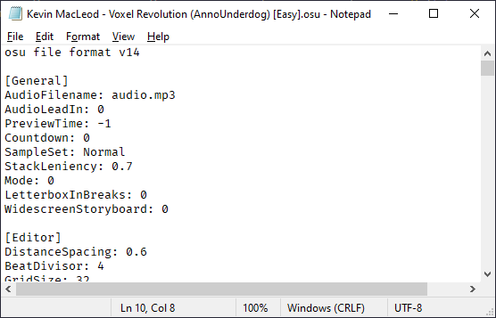

Code Usage
Tip
This section is meant for experienced developers who are comfortable with programming in Unity. If you are unfamiliar with programming, or you don't understand the source code examples here, please refer to Unity's Learn platform first.
The simplest way you can get a beatmap to run from code looks like this:
public class BasicUsage : UnityEngine.MonoBehaviour
{
public MouseDance.Runtime.BeatmapRunner _beatmapRunner;
public UnityEngine.TextAsset _osuFile;
public UnityEngine.AudioClip _song;
void Start()
{
_beatmapRunner.LoadAndStart(_osuFile, _song);
}
}
Caution
Take note that the BeatmapRunner (and HitObjectManager) needs to have been set up properly for this to work. To make this easier, some ready-to-use prefabs are available for you to use in the Demo URP Assets.unitypackage. Once extracted, they will be in the MouseDanceDemo URP Assets/Prefabs folder.
There are some variations for use with either a 2d or 3d camera, and with or without post-processing effects. You can also look at the demo scenes to see how it all works.
After your code calls LoadAndStart, the BeatmapRunner will handle everything.
The .osu file is actually a text file, so we use TextAsset as a straightforward way to get the text data.
Note
If you open an .osu file in Notepad, you'll see all the data inside since it's really just a text file:

The .osu file can already specify the relative path to the song to use, but due to how Unity organizes assets, we can't rely on that path during runtime (unless you use StreamingAssets). So BeatmapRunner allows specifying the AudioClip directly.
Assembly Definition
If your code is using an Assembly Definition, you need to add MouseDance.Runtime and OsuParsers in your Assembly Definition References.
Further Examples
Refer to the other sections on how to customize particular aspects of the game:
- Countdown Animation
- Customizing the Beatmap
- Getting Game Over Event and Results
- Custom User-Input Detection
- Custom Scoring
- Custom Hit Objects
- Custom Hit Rules
- Custom Circle Size
Warning
A note to developers: If you find yourself needing to change the source code inside MouseDance to fit your needs, please contact me first (contact details are in the asset package).
The problem is if you edit MouseDance internal code, and then need to update it to a newer version, you would have to manually resolve the differences between your edits and the newer version of MouseDance.
The proper way to customize MouseDance is using the API: implementing interface callbacks and/or sub-classing and overriding virtual methods. All the sample code shown do it this way. This is more desirable so that your code is separate from the MouseDance internal code.
So if you need to, contact me and I can perhaps create a new virtual method that you can override, a new callback or event that you can subscribe to, or whatever works best for you.